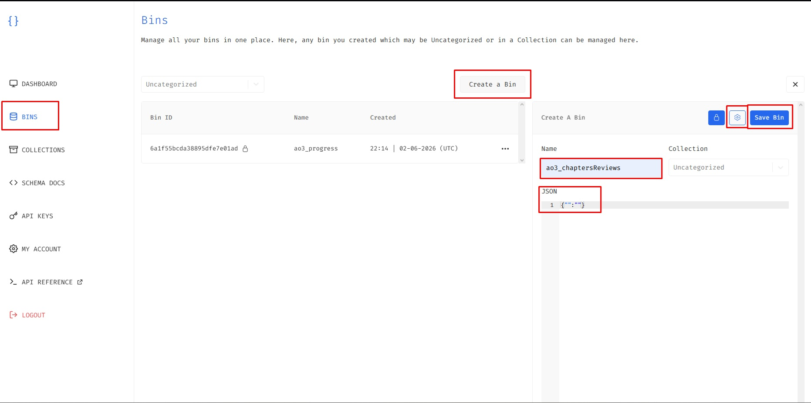
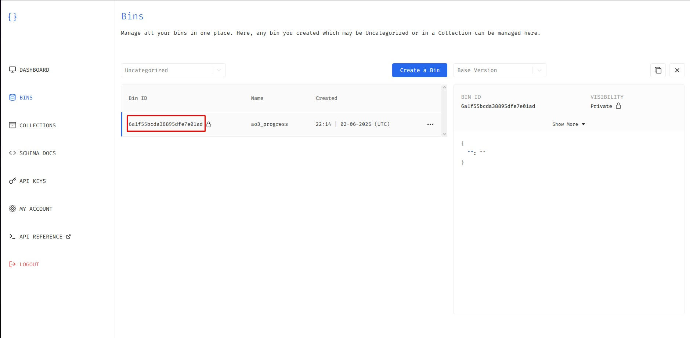
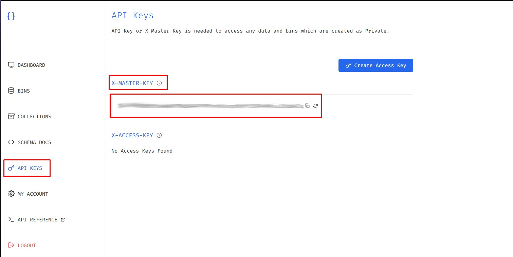
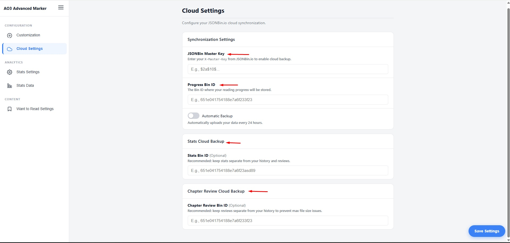
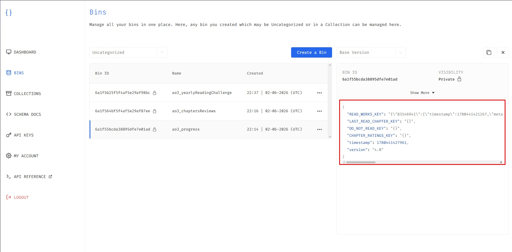
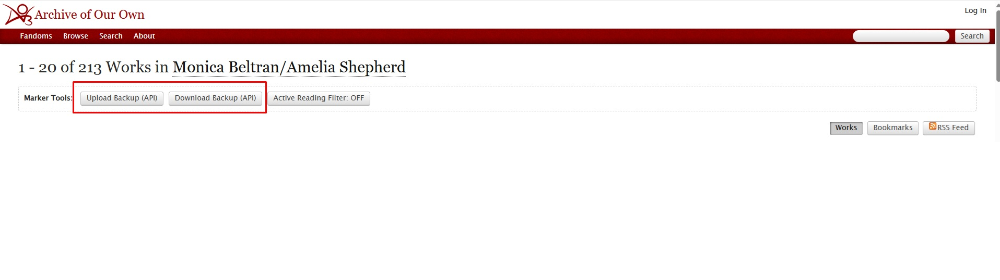
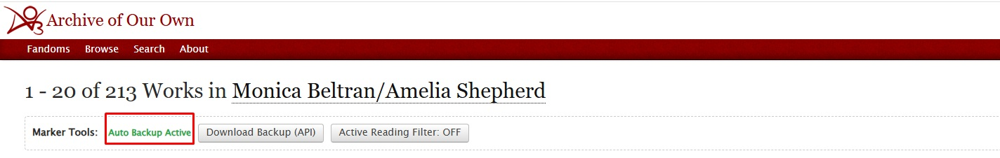

This guide will walk you through setting up cross-device cloud synchronization using JSONBin.io. Follow these steps to back up and sync your reading progress, statistics, and reviews across all your browsers.
Understanding the Synchronization Logic
To avoid accidental data overwrites when switching between different devices (like your phone and your laptop), synchronization in AO3 Advanced Marker is semi-automatic by design:
- Automatic Backup: Pushes your local browser data to the cloud automatically every 24 hours (if enabled).
- Manual Control: Allows you to explicitly pull (Download) or push (Upload) your data on demand directly from the AO3 website interface.
If you read on multiple devices, turn Automatic Backup ON only on your primary device (the one you use most frequently). Keep it OFF on secondary devices. When switching to a secondary device, manually click Download to load your latest progress. Before leaving that device, click Upload if you made any updates manually!
Generating Your Cloud Bins on JSONBin.io
First, you need to create a free account on JSONBin.io to host your encrypted configuration data files.
Step 2.1 — Creating a New Bin
In your JSONBin dashboard, click to create a new bin. Inside the initialization text area, you must provide a valid structural format. Type a JSON structure with an empty string key-value pair:
{"":""}This tells the hosting server that the bin is ready. The extension will automatically overwrite this placeholder with your real reading history once you trigger your first sync.

Step 2.2 — Retrieving Your Bin IDs
Once saved, copy the unique alphanumeric identifier code generated for your newly created bin. You will need a Progress Bin ID, and optionally distinct Bin IDs for your reading statistics and chapter reviews.

Step 2.3 — Finding Your Master Key
Navigate to your JSONBin account API Keys tab to secure your secret Access Master Key. This token authorizes your extension to securely read and write data to your account.

Configuring the Extension Settings
Open the extension's dashboard options panel and navigate to the Cloud Settings tab on the sidebar layout.

Carefully paste your copied values into their respective input fields:
-
1Master Key: Paste your secret
X-Master-Key. -
2Progress Bin ID: Paste your primary reading progress tracker bin code (Required).
-
3Stats Bin ID / Review Bin ID: Paste your optional secondary tracking storage codes.

Using Sync Features Inside AO3
Once your Master Key and Progress Bin ID are saved, navigate to any work or history list page on AO3. Look at the top bar labeled Marker Tools.
Scenario A — Manual Sync Mode
With Automatic Backup disabled, both manual action buttons are fully available on your navbar layout:
- Upload Backup (API): Pushes your local browser markers up to the cloud server storage.
- Download Backup (API): Pulls your cloud record down to refresh your active browser history.

Scenario B — Automatic Backup Mode
If you toggle the Automatic Backup switch ON inside your settings dashboard, the extension handles background updates automatically every 24 hours.

When this mode is active, the manual Upload Backup button is automatically hidden from the top bar to keep your UI clean and prevent redundant API overwrites. The Download Backup button remains accessible so you can pull states whenever needed.